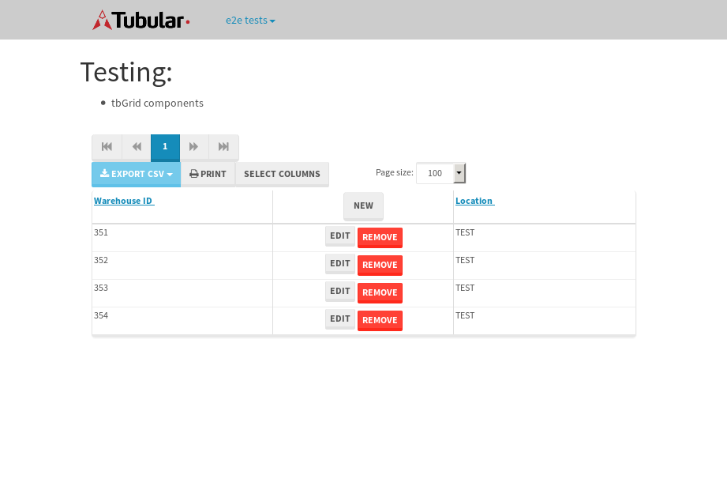

tbColumn.Grid Sorting - 35.581sTests: 5Skipped: 0Failures: 0 should sort data in ascending order then on descending order when sorting by Order Id column - 10.416sTests passed: 100.00%should order data in ascending order when click-sorting an unsorted text column - 6.272sTests passed: 100.00%should order data in descending order when click-sorting an ascending-sorted text column - 6.764sTests passed: 100.00%should order data in ascending order when click-sorting an unsorted date column - 5.038sTests passed: 100.00%should order data in descending order when click-sorting twice an unsorted date column - 7.089sTests passed: 100.00%
tbEmptyForm - 2.44sTests: 3Skipped: 0Failures: 0 should have an empty required field - 0.808sTests passed: 100.00%should not be able to click on save - 0.027sTests passed: 100.00%should load default value for numeric field - 0.039sTests passed: 100.00%
Tubular Filters.tbColumnFilter - 104.865sTests: 12Skipped: 0Failures: 0 should cancel filtering when clicking outside filter-popover - 8.097sTests passed: 100.00%should disable Value text-input for "None" filter - 5.87sTests passed: 100.00%should disable apply button for "None" filter - 5.956sTests passed: 100.00%should decorate popover button when showing data is being filtered for its column - 11.554sTests passed: 100.00%should correctly filter data for the "Equals" filtering option - 8.296sTests passed: 100.00%should correctly filter data for the "Not Equals" filtering option - 8.336sTests passed: 100.00%should correctly filter data for the "Contains" filtering option - 7.987sTests passed: 100.00%should correctly filter data for the "Not Contains" filtering option - 9.507sTests passed: 100.00%should correctly filter data for the "Starts With" filtering option - 6.901sTests passed: 100.00%should correctly filter data for the "Not Starts With" filtering option - 6.95sTests passed: 100.00%should correctly filter data for the "Ends With" filtering option - 6.473sTests passed: 100.00%should correctly filter data for the "Not Ends With" filtering option - 7.262sTests passed: 100.00%
Tubular Filters.tbColumnDateTimeFilter - 128.526sTests: 12Skipped: 0Failures: 0 should cancel filtering when clicking outside filter-popover - 6.417sTests passed: 100.00%should disable Value text-input for "None" filter - 5.662sTests passed: 100.00%should disable apply button for "None" filter - 5.739sTests passed: 100.00%should clear filtering when clicking on Clean button - 17.117sTests passed: 100.00%should decorate popover button when showing data is being filtered for its column - 11.269sTests passed: 100.00%should correctly filter data for the "Equals" filtering option - 7.005sTests passed: 100.00%should correctly filter data for the "Not Equals" filtering option - 7.763sTests passed: 100.00%should correctly filter data for the "Between" filtering option - 11.348sTests passed: 100.00%should correctly filter data for the "Greater-or-equal" filtering option - 11.188sTests passed: 100.00%should correctly filter data for the "Greater" filtering option - 11.266sTests passed: 100.00%should correctly filter data for the "Less-or-equal" filtering option - 11.354sTests passed: 100.00%should correctly filter data for the "Less" filtering option - 11.012sTests passed: 100.00%
Tubular Filters.tbColumnOptionsFilter - 79.82sTests: 3Skipped: 0Failures: 0 should cancel filtering when clicking outside filter-popover - 8.264sTests passed: 100.00%should decorate popover button when showing data is being filtered for its column - 11.095sTests passed: 100.00%should filter column-elements in accordance to the selected filter when selecting a single option - 48.942sTests passed: 100.00%
Tubular Filters.tbTextSearch - 45.671sTests: 5Skipped: 0Failures: 0 min-chars is not set - 0.119sTests passed: 100.00%should filter data in searchable-column customer name to matching inputted text, starting from 3 characters - 6.372sTests passed: 100.00%should filter data in searchable-column shipper city to matching inputted text, starting from 3 characters - 11.62sTests passed: 100.00%should show clear button when there is inputted text only - 5.959sTests passed: 100.00%should clear filtering when clicking clear button - 15.699sTests passed: 100.00%
tbForm related components.tbCheckboxField - 6.924sTests: 2Skipped: 0Failures: 0 should save changes on "SAVE" - 2.316sTests passed: 100.00%should discard changes on "CANCEL" - 2.748sTests passed: 100.00%
tbForm related components.tbDropDownEditor - 10.978sTests: 5Skipped: 0Failures: 0 should set initial input value to the value of "value" attribute when defined - 1.47sTests passed: 100.00%should show the component name value in a label field when "showLabel" attribute is true - 1.232sTests passed: 100.00%should show a help field equal to this attribute, is present - 0.937sTests passed: 100.00%should submit modifications to item/server when clicking form "Save" - 3.235sTests passed: 100.00%should NOT submit modifications to item/server when clicking form "Cancel" - 2.778sTests passed: 100.00%
tbForm related components.tbTextArea - 17.181sTests: 7Skipped: 0Failures: 0 should set initial input value to the value of "value" attribute when defined - 1.189sTests passed: 100.00%should be invalidated when the number of chars is not in the range of "min" and "max" attributes - 1.586sTests passed: 100.00%should show the component name value in a label field when "showLabel" attribute is true - 1.219sTests passed: 100.00%should show a help field equal to this attribute, is present - 1.848sTests passed: 100.00%should require the field when the attribute "required" is true - 1.335sTests passed: 100.00%should submit modifications to item/server when clicking form "Save" - 4.978sTests passed: 100.00%should NOT submit modifications to item/server when clicking form "Cancel" - 3.007sTests passed: 100.00%
tbForm related components.tbDateEditor - 14.571sTests: 6Skipped: 0Failures: 0 should set initial date value to the value of "value" attribute when defined - 1.257sTests passed: 100.00%should be invalidated when the date is not in the range of "min" and "max" attributes - 1.646sTests passed: 100.00%should show the component name value in a label field when "showLabel" attribute is true - 0.916sTests passed: 100.00%should show a help field equal to this attribute, is present - 0.885sTests passed: 100.00%should submit modifications to item/server when clicking form "Save" - 2.101sTests passed: 100.00%should NOT submit modifications to item/server when clicking form "Cancel" - 4.098sTests passed: 100.00%
tbForm related components.tbTypeaheadEditor - 23.654sTests: 7Skipped: 0Failures: 0 should show an options list when there is an API-info/component entered-data - 2.844sTests passed: 100.00%should select the option clicked - 1.73sTests passed: 100.00%should show a "delete" button when an option/match is selected, and delete the option if button is clicked - 5.609sTests passed: 100.00%should show a label value equal to the component name when "showLabel" attribute is true - 1.791sTests passed: 100.00%should require a value when "require" attribute is true - 4.083sTests passed: 100.00%should submit modifications to item/server when clicking form "Save" - 3.755sTests passed: 100.00%should NOT submit modifications to item/server when clicking form "Cancel" - 1.974sTests passed: 100.00%
tbForm related components.tbSimpleEditor - 15.62sTests: 9Skipped: 0Failures: 0 should set initial input value to the value of "value" attribute when defined - 1.188sTests passed: 100.00%should be invalidated when the number of chars is not in the range of "min" and "max" attributes - 1.41sTests passed: 100.00%should show the component name value in a label field when "showLabel" attribute is true - 1.159sTests passed: 100.00%should set input placeholder to the value of "placeholder" attribute - 1.598sTests passed: 100.00%should validate the control using the "regex" attribute, if present - 1.065sTests passed: 100.00%should show a help field equal to this attribute, is present - 1.014sTests passed: 100.00%should require the field when the attribute "required" is true - 1.214sTests passed: 100.00%should submit modifications to item/server when clicking form "Save" - 3.575sTests passed: 100.00%should NOT submit modifications to item/server when clicking form "Cancel" - 2.531sTests passed: 100.00%
tbForm related components.tbNumericEditor - 14.546sTests: 7Skipped: 0Failures: 0 should set initial component value to the value of "value" attribute when defined - 1.028sTests passed: 100.00%should be invalidated when the entered number is not in the range of "min" and "max" attributes - 1.71sTests passed: 100.00%should show the component name value in a label field when "showLabel" attribute is true - 1.633sTests passed: 100.00%should show a help field equal to this attribute, is present - 1.138sTests passed: 100.00%should require the field when the attribute "required" is true - 1.26sTests passed: 100.00%should submit modifications to item/server when clicking form "Save" - 4.966sTests passed: 100.00%should NOT submit modifications to item/server when clicking form "Cancel" - 1.633sTests passed: 100.00%
tbForm Connection Error NoModelKey - 2.526sTests: 1Skipped: 0Failures: 0 tbForm connection error functionality - 0.005sTests passed: 100.00%
tbForm Connection Error NoServerUrl - 2.137sTests: 1Skipped: 0Failures: 0 tbForm connection error functionality - 0.002sTests passed: 100.00%
tbGridComponents - 29.058sTests: 6Skipped: 0Failures: 1 should add item with newRow method - 3.065sTests passed: 100.00%should add item with newRow method and cancel action - 0.329sTests passed: 100.00%should update item with tbSaveButton - 1.989sTests passed: 100.00%should NOT update item on cancel Update action - 0.866sTests passed: 100.00%should remove item with tbRemoveButton - 20.698sExpected 4 not to be 4, 'should remove the row from the table'.✗Tests passed: 50.00%should NOT remove item on cancel Remove action - 0.708sTests passed: 100.00%
tbGridPager.navigation buttons - 4.314sTests: 1Skipped: 0Failures: 0 should perform no action when clicking on the numbered navigation button corresponding to the current-showing results page - 0.719sTests passed: 100.00%
tbGridPager.navigation buttons.first/non-last results page related functionality - 0.814sTests: 2Skipped: 0Failures: 0 should disable "first" and "previous" navigation buttons when in first results page - 0.122sTests passed: 100.00%should enable "last" and "next" navigation buttons when in a results page other than last - 0.692sTests passed: 100.00%
tbGridPager.navigation buttons.last/non-first results page related functionality - 2.78sTests: 2Skipped: 0Failures: 0 should disable "last" and "next" navigation buttons when in last results page - 0.68sTests passed: 100.00%should enable "first" and "previous" navigation buttons when in a results page other than first - 2.1sTests passed: 100.00%
tbGridPager.page navigation - 4.654sTests: 5Skipped: 0Failures: 0 should go to next results page when clicking on next navigation button - 1.211sTests passed: 100.00%should go to previous results page when clicking on previous navigation button - 1.18sTests passed: 100.00%should go to last results page when clicking on last navigation button - 1.013sTests passed: 100.00%should go to first results page when clicking on first navigation button - 0.65sTests passed: 100.00%should go to corresponding results page when clicking on a numbered navigation button - 0.599sTests passed: 100.00%
tbGridPagerInfo - 5.569sTests: 2Skipped: 0Failures: 0 should show text in accordance to numbered of filter rows and current results-page - 2.914sTests passed: 100.00%should show count in footer - 0.046sTests passed: 100.00%
tbPageSizeSelctor - 15.956sTests: 4Skipped: 0Failures: 0 should filter up to 10 data rows per page when selecting a page size of "10" - 4.01sTests passed: 100.00%should filter up to 20 data rows per page when selecting a page size of "20" - 2.934sTests passed: 100.00%should filter up to 50 data rows per page when selecting a page size of "50" - 4.068sTests passed: 100.00%should filter up to 100 data rows per page when selecting a page size of "100" - 3.504sTests passed: 100.00%
tbSingleForm - 14.178sTests: 8Skipped: 1Failures: 1 should load correct info - 0.001s***Skipped***Tests passed: 0%should change customer name - 1.694sTests passed: 100.00%should save it - 2.025sExpected '' to be 'Saved'.✗Tests passed: 50.00%should clear the inputs - 2.171sTests passed: 100.00%should update - 2.017sTests passed: 100.00%should reset editor - 2.122sTests passed: 100.00%should not save if not Changes - 2.114sTests passed: 100.00%should not be able to click on save - 2.032sTests passed: 100.00%

{kind=link}